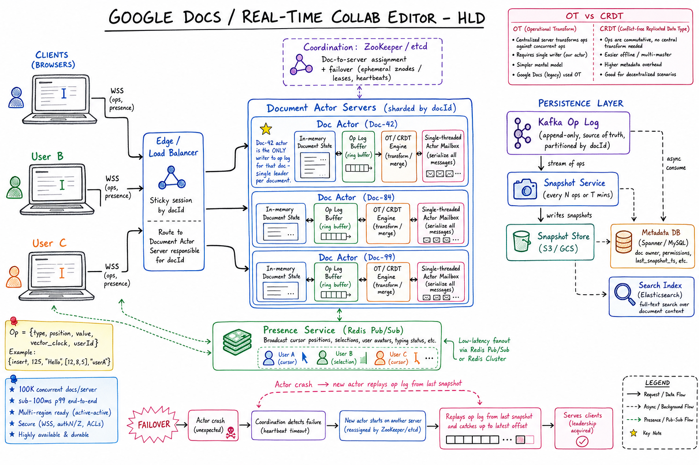
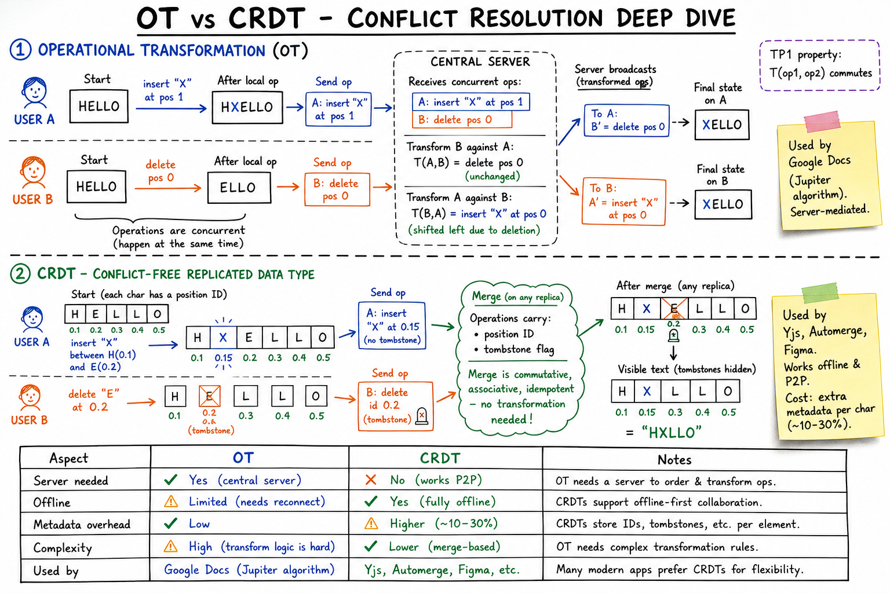
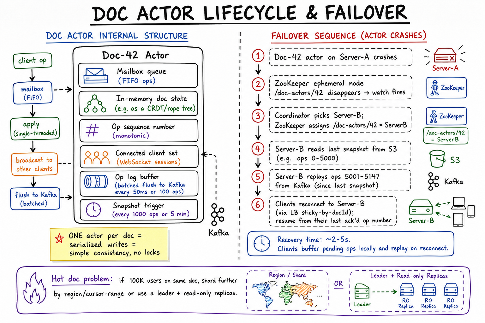

Google Docs // Realtime Collab
Concurrent collaborative editing: Operational Transformation (OT) vs CRDTs, single-leader-per-doc actor model, op log + snapshots, presence via Pub/Sub, offline support, hot-doc fanout, and version history.

Whiteboard HLD: clients connect via WebSocket through sticky-by-docId LB to Document Actor Servers (one single-threaded actor per doc = serialized writes, no locks). Ops flow into Kafka op log (source of truth, partitioned by docId), snapshots periodically flushed to S3, metadata in Spanner, search in Elasticsearch. Presence broadcast via Redis Pub/Sub. ZooKeeper coordinates actor-to-server assignment and failover.
01 — Requirements
Functional
- Multiple users edit same doc concurrently in real time
- Live cursors & selections (presence)
- Edits converge — everyone sees same final state
- Offline editing (sync on reconnect)
- Version history, undo-redo, comments, sharing/ACL
- Rich text (bold, headings, images, tables)
Non-Functional
- Latency: local edit < 50ms, remote < 200ms
- Concurrency: 50-100 editors/doc; 1M concurrent docs globally
- Consistency: eventual — all clients converge
- Durability: never lose an acked keystroke
- Scale: 1B+ docs, 100M DAU
01a — Core Entities
| Entity | Key Fields | Notes |
|---|---|---|
| Document | doc_id, title, owner_id, created_at, updated_at, latest_snapshot_id, current_actor_node | The collaborative artifact. Metadata in Spanner; content in op log + snapshots. |
| Operation (Op) | op_id, doc_id, user_id, op_type (insert/delete/format), position, value, vector_clock, ts | Atomic change. The unit of replication. |
| Snapshot | snapshot_id, doc_id, op_seq_upto, s3_key, created_at | Periodic full state. Bounds replay cost on recovery. |
| Session | session_id, user_id, doc_id, ws_conn_id, joined_at, cursor_pos | One active editor on one doc. Holds the WebSocket. |
| Presence | doc_id, user_id, cursor, selection, color, last_seen_at | Ephemeral state in Redis Pub/Sub; not persisted. |
| Permission / ACL | doc_id, principal_id, role (owner/editor/commenter/viewer), inherited? | Access control checked on session open + on each op. |
| Comment | comment_id, doc_id, anchor (text range), author_id, body, resolved?, thread_id | Side-channel discussions; same op log discipline. |
| Version / Revision | revision_id, doc_id, snapshot_id, created_by, name | Named history points (version history feature). |
01b — API Design
Document CRUD (REST)
POST /docs create
GET /docs/{id} metadata + latest snapshot
PATCH /docs/{id} title, sharing settings
DELETE /docs/{id} soft delete
POST /docs/{id}/share grant permission
GET /docs/{id}/revisions named version history
Real-time edit channel (WebSocket)
# Client -> Server
JOIN { doc_id, user_id, since_op_seq? } # resume from a known point
OP { doc_id, op_id, op_type, position, value, vector_clock }
CURSOR { doc_id, position, selection } # presence
PING {}
# Server -> Client
SNAPSHOT { doc_id, content, op_seq_upto } # sent on JOIN
OP_BROADCAST { doc_id, op (transformed) } # other users' edits
ACK { op_id, server_seq } # commit confirmation
PRESENCE { user_id, cursor, selection, color }
RETRACT { op_id, reason } # rare; conflict resolution
Wire format: typically protobuf or JSON; one WS multiplexes all docs the user has open.
Comments & suggestions
POST /docs/{id}/comments { anchor, body }
PATCH /comments/{cid} { resolved: true }
GET /docs/{id}/comments?cursor
The interesting API surface is the WebSocket message protocol, not REST. The contract has to specify: how clients buffer offline ops, how servers ack and assign sequence numbers, how clients reconcile their optimistic local state with the server's authoritative order.
02 — Estimation
DAU = 100M Docs edited/user/day = 5 Ops/doc/day = 200 (typing chars) Op size = 50 bytes Total ops/day = 100B Ops/sec = ~1.2M Bandwidth = 60 MB/sec ingest Concurrent WebSockets = ~30M Per-server capacity = 50K conns → 600 edge servers Concurrent docs = ~5M (avg 7 editors/doc)
03 — The Core Problem: Concurrent Edits
Initial: "HELLO"
User A: insert("X", pos=0) → "XHELLO"
User B: insert("Y", pos=5) → "HELLOY"
If applied naively in different orders → STATES DIVERGE.
Client A: HELLO → XHELLO → XHELLY (wrong — pos 5 invalid now)
Client B: HELLO → HELLOY → XHELLOY (correct)
Position-based ops become INVALID once concurrent ops shift positions.
Need to TRANSFORM ops to account for concurrent changes.
SOLUTIONS: Operational Transformation (OT) or CRDTs.
Zoom-in: OT (Operational Transformation, used by Google Docs Jupiter algorithm) — server transforms concurrent ops against each other to converge state; needs central server. CRDT (Conflict-free Replicated Data Type, used by Yjs/Automerge/Figma) — ops carry fractional position IDs + tombstones, merges are commutative/associative/idempotent, no transformation needed, works offline/P2P. Worked example: User A inserts "X", User B deletes concurrently — both converge to same final state.
04 — Operational Transformation (Google Docs)
Server-mediated. When op B arrives based on old version, server transforms it against intervening ops.
Initial "HELLO" (v0)
A: insert("X", 0) based on v0
B: insert("Y", 5) based on v0 (concurrent)
Server:
Apply A → "XHELLO" (v1)
Receive B based on v0 → transform against A:
A inserted at pos 0 BEFORE B's pos 5 → shift B to pos 6
transformed B = insert("Y", 6)
Apply → "XHELLOY" (v2)
Broadcast:
To A: B' = insert("Y", 6) → "XHELLOY"
To B: A = insert("X", 0) → B applies on its "HELLOY" → "XHELLOY"
Both converge.
Transformation Function (sketch)
def transform(op2, op1): # both INSERT if op1.pos < op2.pos: return Insert(op2.char, op2.pos + 1) if op1.pos > op2.pos: return op2 # tie: same position → user_id tie-break return op2 if op1.user > op2.user else Insert(op2.char, op2.pos+1)
TP1 vs TP2
- TP1: apply(op1, T(op2,op1)) == apply(op2, T(op1,op2)). Sufficient for client-server.
- TP2: needed for P2P OT. Much harder. Many OT systems have subtle TP2 bugs.
- Google Docs uses Jupiter algorithm (TP1, server-mediated) — avoids TP2 entirely.
05 — CRDTs (Figma, Notion, Yjs)
Decentralized. Concurrent ops always commute — no transformation needed.
Trick: each char gets a globally unique, dense identifier.
Instead of: insert("X", position=5)
Use: insert("X", id=(1.5, user_A))
FRACTIONAL POSITIONS:
Existing: [A=1.0, B=2.0, C=3.0]
User A inserts X between A and B: id = midpoint(1, 2) = 1.5
User B inserts Y between A and B: id = midpoint(1, 2) = 1.5 ← collision
Tie-break: (1.5, user_A) vs (1.5, user_B)
Final: [A, X=(1.5,A), Y=(1.5,B), B, C]
Apply ops in ANY ORDER → same final state.
Properties
- Each char carries unique ID (~10-30 bytes overhead per char)
- Deletes use tombstones (mark deleted, don't remove)
- Periodic GC needed (consensus on tombstone cutoff)
- Position rebalancing problem: midpoint IDs grow long → LSEQ / Logoot solves
- Popular libs: Yjs (YATA), Automerge
06 — OT vs CRDT
| OT (Google Docs) | CRDT (Figma, Yjs) | |
|---|---|---|
| Server needed for correctness | Yes | No (P2P works) |
| Op size | Small (pos + char) | Larger (unique IDs) |
| Doc size overhead | None | 5-10x |
| Tombstones | No | Yes (need GC) |
| Offline support | Tricky | Native |
| Implementation | Hard (transform matrix) | Medium (libs help) |
Online + server-authoritative → OT. Offline-first / P2P / mobile → CRDT.
07 — High-Level Architecture
+-------------------------------------------------------+
| CLIENT (Browser / Mobile) |
| Editor UI ⇆ Local doc ⇆ WebSocket |
+-------------------------------------------------------+
| WSS
v
+-------------------------------------------------------+
| EDGE / WS GATEWAY (Stateless, 50K conns) |
| Sticky routing: hash(doc_id) → doc server |
+-------------------------------------------------------+
|
v
+-------------------------------------------------------+
| DOC SERVERS (stateful, 1 actor per doc) |
| In-memory state, version, op history |
+-+----+----+----+--------------------------------------+
| | | |
| | | +→ Pub/Sub (Redis) -- cross-server fanout
| | |
| | +→ Presence Cache (Redis: cursors)
| |
| +→ Op Log (Kafka, append-only, durable)
|
+→ Snapshot Store (S3, every N ops)
Metadata DB (Spanner: doc_id, ACL, owner)
Zoom-in: Doc Actor internal structure (mailbox, in-memory state, op sequence, connected clients, batched Kafka flush, snapshot trigger) and 6-step failover sequence when an actor crashes — ZooKeeper watch fires, coordinator picks new server, latest snapshot loaded from S3, recent ops replayed from Kafka, clients reconnect via sticky LB and resume from last ack'd op. Recovery ~2-5s. Hot doc problem solved by region/cursor-range sharding or leader + read replicas.
08 — Doc Server (Stateful Actor)
Why actor-per-doc?
- Single writer eliminates race conditions
- In-memory state → microsecond latency
- Easy to reason about (no distributed locks)
Processing an op
1. Receive op from client (with V_client) 2. Look up server version V_server 3. If V_client < V_server → transform against ops [V_client, V_server] 4. Apply → V_server++ 5. Persist op to Kafka (DURABILITY before ack) 6. Ack original client 7. Broadcast transformed op to other connected clients 8. Pub/Sub to clients on OTHER doc servers (if any)
Snapshots
- Every N ops (e.g. 1000) → persist full doc state to S3
- On doc load: snapshot + replay ops since
- Trim op log periodically (keep 30d for history)
09 — Failover & Recovery
Doc server crashes:
- In-memory state lost (ops, presence)
- Op log is DURABLE (Kafka)
- All clients lose WebSocket → reconnect
Recovery:
1. ZooKeeper detects dead server (heartbeat timeout)
2. Coordinator reassigns docs to surviving servers
3. New server loads:
- Latest snapshot from S3
- All ops since snapshot from Kafka
4. Replays → reconstructs doc state
5. WS gateway reroutes new conns
6. Clients reconnect, sync from server version
Guarantees:
- No op loss (durable before ack)
- Brief delay (~seconds)
- Final state identical (op log is deterministic)10 — Presence (Cursors, Selections)
Different from edits: high frequency, low durability.
- Don't go through op log (too noisy)
- Throttle to ~30 updates/sec/client (rAF tick)
- Compress: just
(user_id, cursor_pos, selection_range) - Separate WebSocket message type / channel
- Cross-server: Redis Pub/Sub channel per doc_id
Cursor adjustment
When a remote op inserts before your cursor → shift your local cursor by len. Same logic as op transformation.
11 — Offline Support
| OT (Google Docs) | CRDT (Notion, Figma) | |
|---|---|---|
| Local queue | Pending ops queue | Full local CRDT replica |
| Reconnect | Send all pending, server transforms | Send delta, server merges (commutative) |
| Long offline | Many transformations → merge issues | Always converges |
| Storage | Op queue only | IndexedDB full doc |
CRDTs are fundamentally better for offline-first apps.
12 — Storage Tiers
| Tier | System | Purpose | Retention |
|---|---|---|---|
| Op Log | Kafka (per-shard topic) | Append-only ops, replay source | 7-30 days |
| Snapshots | S3 / GCS (compressed protobuf) | Doc body every N ops, version history | Forever |
| Metadata | Spanner / MySQL | doc_id, owner, ACL, title | Forever |
| Presence | Redis (in-memory) | Cursors, selections (ephemeral) | ~seconds |
Version History
Sparse snapshots (every hour) + op log → reconstruct any past version. "Restore" = create a new op overwriting with old content (not destructive).
13 — Scaling
Sharding
- Hash
doc_id→ doc server (consistent hashing + vnodes) - Each doc server: ~1000 active docs in memory; cold docs evicted
WebSocket fanout
- Sticky routing: clients of doc D land on same edge gateway
- Cross-edge: Redis Pub/Sub per doc_id
Hot docs (1000+ editors)
- Move to dedicated doc server
- Tree-based fanout: doc server → fanout proxies → clients
- Throttle presence (1Hz instead of 30Hz)
Global distribution
- Doc has "home region" (closest to creator)
- Active editing routed to home region (consistency > latency)
- Read-only viewers can read regional snapshots (eventual ok)
14 — Edge Cases
| Concern | Handling |
|---|---|
| Same-position concurrent insert | OT: tie-break by user_id. CRDT: unique IDs deterministic. |
| Network partition | Buffer ops locally, sync on reconnect. |
| Massive paste (1MB) | Chunk into smaller ops, throttle, show progress. |
| Doc server overload | Backpressure on op queue, shed cold docs, 503 new conns. |
| Malicious op flood | Per-user rate limit (100 ops/sec), op schema validation. |
| Schema evolution | Op log has schema version; old clients ignore unknown ops. |
| CRDT tombstone bloat | Periodic GC with consensus on cutoff. |
| Cursor jumps on remote insert | Transform local cursor pos against incoming op. |
| Long offline (weeks) | Git-like merge UI; let user resolve conflicts. |
15 — Real-World Systems
| System | Approach |
|---|---|
| Google Docs | OT (Jupiter algorithm, server-authoritative). Bigtable/Spanner for op log. WS + long-poll fallback. |
| Figma | Custom CRDT-like in Rust. Single-leader actor per doc. Serializes to S3 every minute. 100s of editors per file. |
| Notion | Block-based CRDT. Offline-first. Postgres storage. |
| Yjs / Automerge | Open-source CRDT libs. Yjs uses YATA — very efficient. |
| Etherpad | OT (open-source, simpler). |
16 — Interview Q&A
Why not just use locks (one editor at a time)?
Kills UX — collaborative editing means simultaneous typing. Locks introduce wait latency, deadlock risk, and don't help with offline. Real systems use OT or CRDTs.
OT vs CRDT — which would you choose?
Depends on requirements. OT: when there's a server-authoritative system, doc size matters, simpler op model. CRDT: for offline-first, P2P, mobile, or when avoiding centralized correctness is desirable. Google Docs picked OT (centralized); Figma/Notion picked CRDT (offline + P2P friendly).
What is TP1 and why is TP2 hard?
TP1: after transforming op1 against op2 and vice versa, applying them in either order yields the same state. Sufficient for client-server (server provides total order). TP2: needed for P2P OT — transformation is associative across 3+ ops. Mathematically very hard; many systems have buggy TP2 implementations. Google avoids it by using server-authoritative ordering.
How do you handle a doc server crash mid-edit?
Op log (Kafka) is durable BEFORE ack — no acked op is lost. ZK detects death, coordinator reassigns doc, new server loads latest snapshot + replays ops since. Clients reconnect via WS gateway. Brief unavailability (~seconds), no data loss.
Why a single leader per doc instead of multi-leader?
Single leader = total order on ops → correctness easy (TP1 OT works). Multi-leader requires either consensus (slow), TP2 OT (buggy), or CRDTs (overhead). For interactive editing, single leader gives microsecond latency in-memory.
How do you scale to 1000 editors on a viral doc?
Tree-based fanout: doc server publishes to N fanout proxies, each handles ~100 clients. Throttle presence to 1Hz. Use diff/batch ops to reduce traffic. May need to shed non-essential features (live cursors) under extreme load.
What if two users insert at exactly the same position?
OT: tie-break by user_id (smaller user_id "wins" left position). CRDT: each insertion has unique ID (e.g., (fractional_pos, user_id)), so concurrent inserts at "same" position get distinct IDs and a deterministic order.
How does presence (cursors) scale separately from edits?
Different channel: not durable, not in op log, throttled to 30Hz then 1Hz on hot docs. Stored in Redis (ephemeral). Fanned out via Pub/Sub. Compressed: just (user, pos, selection).
How do version history and undo work?
Snapshots every hour + op log → can reconstruct any past version. "Restore" creates a new op (not destructive). Undo is inverse-op generation: each op has an inverse; client applies inverse locally, sends to server like a normal op.
SDE-2 vs SDE-3 differentiator?
| SDE-2 | SDE-3 |
|---|---|
| OT basics, WS, op log + snapshots, single-leader actor. | + TP1 vs TP2, CRDT mechanics (fractional IDs, tombstone GC), causal ordering (Lamport / vector clocks), hot-doc fanout, schema evolution, position rebalancing in CRDTs (LSEQ vs Logoot), failover via op log replay, offline merge UX. |